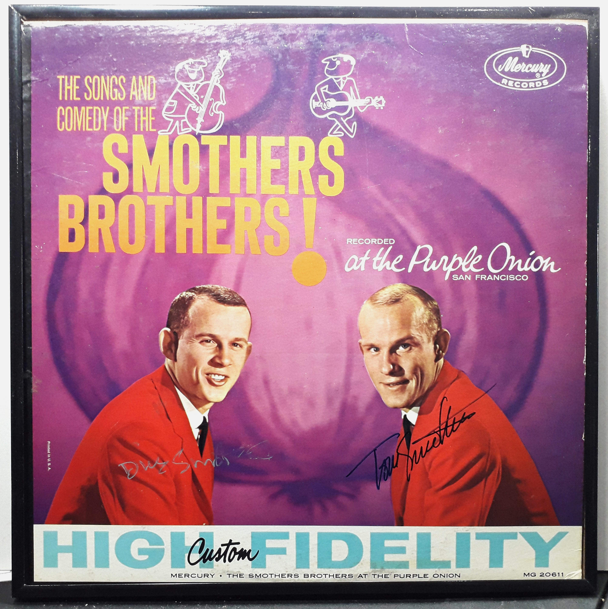

Miscellaneous
Framed and ready to hang.
Product No. HEA-0324
$160
Shipping: $18.95
Description
Signed LP Album - Smothers Brothers - Purple Onion! - Framed
Full Description
Deceased, Tom Smothers (February 2, 1937 – December 26, 2023) and Dick Smothers (November 20, 1938 – July 16, 2024) were the American comedy and musical duo known as the Smothers Brothers. The brothers became famous for combining folk music, comedy, satire, and humorous onstage arguments. Tom usually played the confused, easily offended brother, while Dick served as the more serious straight man. They began performing professionally in the late 1950s, appearing in folk clubs and on college campuses. Tom played acoustic guitar and Dick played double bass. Their musical performances frequently turned into comic arguments, which became the trademark of their act. Their most famous television program was The Smothers Brothers Comedy Hour, which aired on CBS from 1967 to 1969. The show featured comedy, music, political satire, and commentary on controversial subjects including the Vietnam War, civil rights, and government policies. The program became especially notable for its conflicts with CBS over censorship. The brothers repeatedly challenged network restrictions on political and social material, and CBS eventually cancelled the show in 1969. The Smothers Brothers continued performing together for decades afterward in concerts, clubs, television appearances, and specials. Their television work also helped provide early opportunities for performers and writers such as Steve Martin and Rob Reiner. They are remembered as one of the most influential comedy teams of the 1960s, combining music and humor while helping expand the boundaries of political and social satire on American television.
Condition
Good condition. Minor tear at bottom seam.